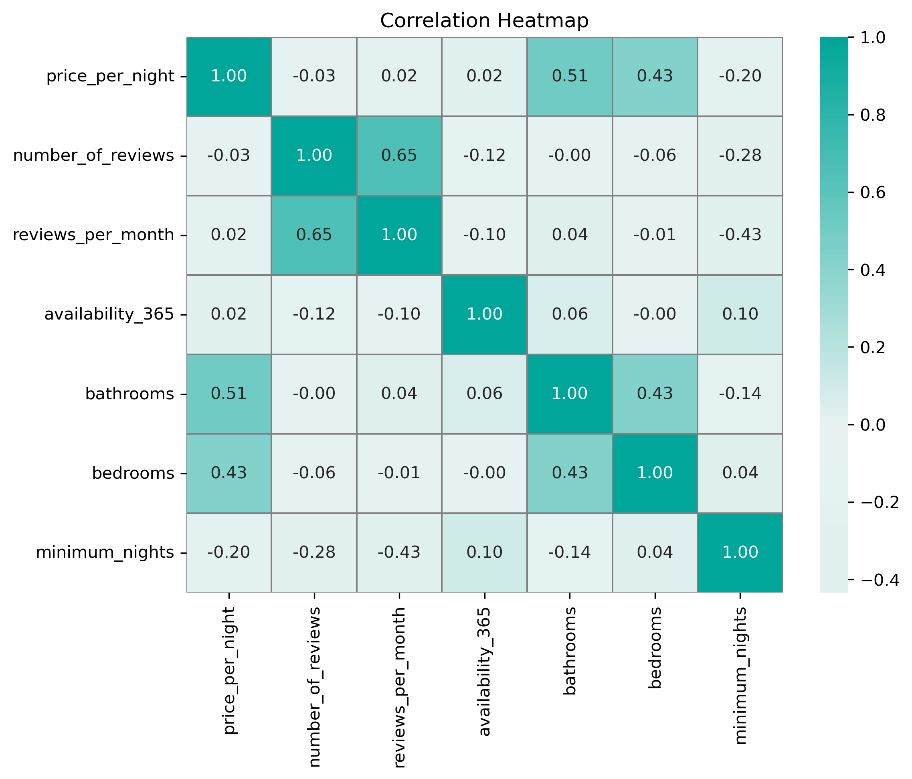

Explore detailed visualizations to understand the factors affecting Airbnb prices in Boston.
In this box plot, the nightly Airbnb prices are being compared across room type and neighborhood. The user can use the drop-down to select the neighborhood and using the legend on the right to identify the colors, the boxes can be explored for each room type. It clearly shows how room type has a significant effect on the nightly prices, as an entire home is relatively more across all neighborhoods than just a private room. The use of showing the different neighborhoods exemplifies how this holds true across all of them, except for one outlier of Back Bay. In Back Bay, a private room is actually slightly more money in comparison to a home, which shows how neighborhoods can affect how the prices are for different types. Given that Back Bay is a more touristic area, this would make sense. Exploring all the neighborhoods would be helpful to get a feel for this pricing.
Interact: Use the drop-down to select with neighborhood you want to see! Hover over the boxplot to see the stats.
In this scatter plot, the number of listings per host is compared to their average price per night. Then, using the slider to filter out to a specific price range, one can explore the corresponding host response rate, also compared to the average price per night for that host. The user can also zoom in and out of both charts in order to get a closer look into the clusters! In the first chart, large multi-listing hosts mainly cluster in the lower price range (under $200 per night), suggesting that hosts tend to operate cheaper, more standardized units, while higher-priced listings (above $400) are owned by hosts with only one or a few properties. In the second chart, host response rates remain consistently high (between 90% and 100%) across all price levels, showing that both budget and luxury listings provide similarly fast communication. A few low-response outliers exist, but they appear randomly across different price points. Overall, the charts suggest that Airbnb pricing is not strongly influenced by responsiveness, meanwhile slightly affected by the number of listings per host.
Interact: Use the slider to filter to a certain price and zoom in an out in order to have a clear view of the points! Hover over points to view the information about the host and their listings count/response rate. Also, if you only want to see one room type, use the legend to select which one!
In this chart above, it is showing a heatmap of different quantitative factors in relation to Airbnb characteristics. Therefore, looking at two variables one can explore how closely related they are to one another. In relation to specifically price, this shows that the number of bathrooms have the strongest effect on nightly prices with a correlation coefficient of 0.51. This shows that as the number of bathrooms increases, the price per night also increases at a moderate rate. The number of bedrooms is the same case, in which it is one of the stronger features. On the other hand, demand and activity metrics such as reviews and availability have less of a correlation/effect on the price. This is overall showing that the physical attributes of a place have more of an effect on price. Take a look at the heatmap to see what other variables strongly correlate with each other!

In this map visualization, Airbnb prices and listing density are encoded across Boston neighborhoods utilizing geojson. The orange fill color represents the average nightly price, ranging from lighter tones for budget-friendly areas to deeper orange for more expensive areas. Meanwhile, the pink border thickness encodes the number of listings in each neighborhood, with thicker outlines indicating higher density. This dual encoding allows viewers to quickly identify areas that are both expensive and saturated with Airbnb activity.There is a clear trend here. The closer a neighborhood is to downtown Boston or to high-demand, resource rich areas like Back Bay, Beacon Hill, or the South End, the more expensive it tends to be. These central and upscale districts show deeper orange fill, which reflects its nightly prices driven by the amenities and tourist spots in the area. In contrast, neighborhoods farther from the city center or with fewer tourist spots seem to have lighter fill colors, indicating cheaper listings. Hovering over each neighborhood reveals exact metrics, including average price and listing count which is helpful when comparing. The legend supports these encodings, showing price benchmarks from $200 to $800 and listing density from 3 to 496.
Interact: Hover over a neighborhood to see their average price and number of listings!
This bar chart displays the average Airbnb listing price in Boston, grouped by guest review score categories (1-2, 2-3, 3-4, and 4-5). A dropdown filter allows users to specifically select listings by room type: hotel room or private room for a more clear comparison. Each bar represents the average price per night for listings within that review score category. Hovering over a bar reveals the score category, average price, and number of listings. There are several key insights here that we can blook at. For entire homes, average prices are typically consistent across review score categories (around $220-$290), which suggests that price alone does not determine guest satisfaction. Additionally, the lowest-rated listings (1-2) show a higher average price than mid-range scores, which may indicate that overpriced listings receive harsher value ratings from guests. A smaller subtlety is that when looking at private rooms they show an interesting difference the lowest-rated category (1-2) has the highest average price. This could potentially suggest that the pricy room may have not been overpriced and that customers tend to have harsher reviews for more expensive listings. Overall, the visualization shows that perceived value is not strictly tied to price, and that guests across all price points can achieve high satisfaction when expectations are met.
Interact: Use the drop-down to select room type! Hover over bars to see details.